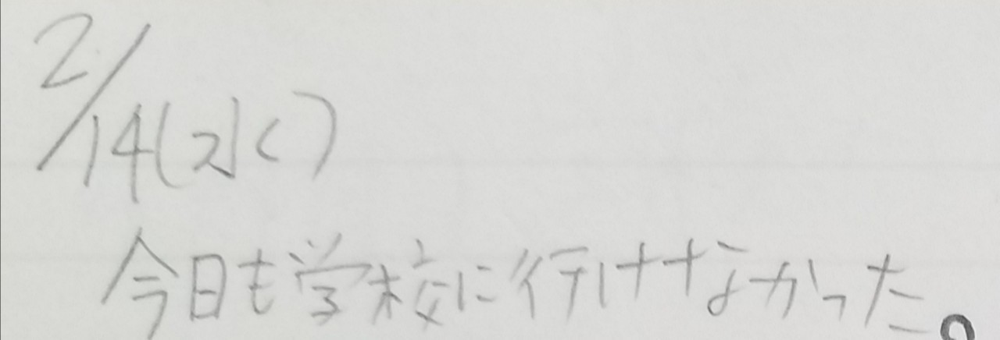
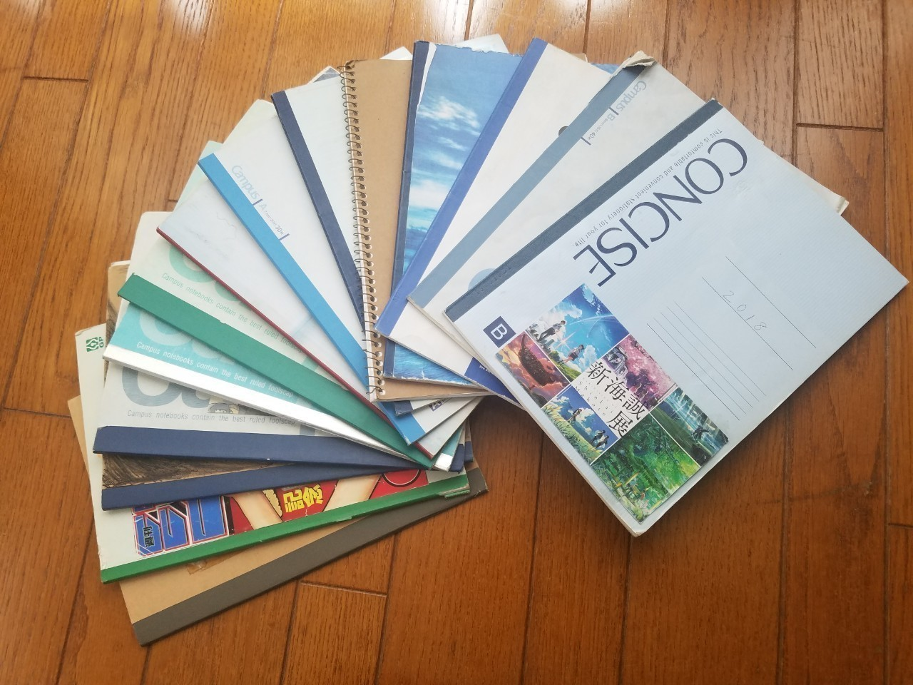
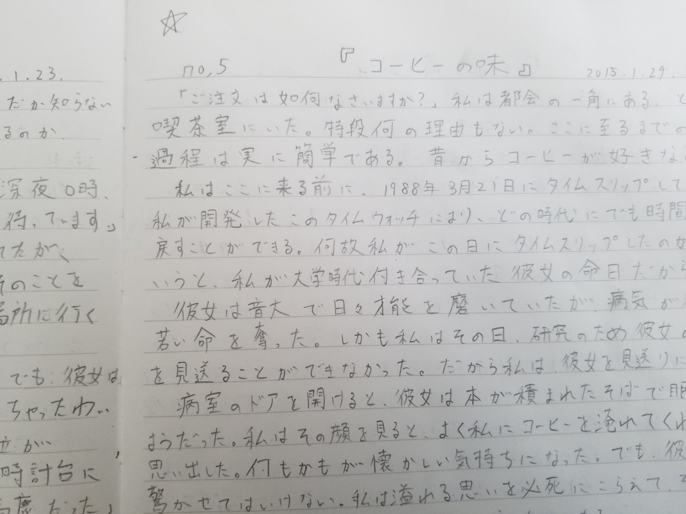
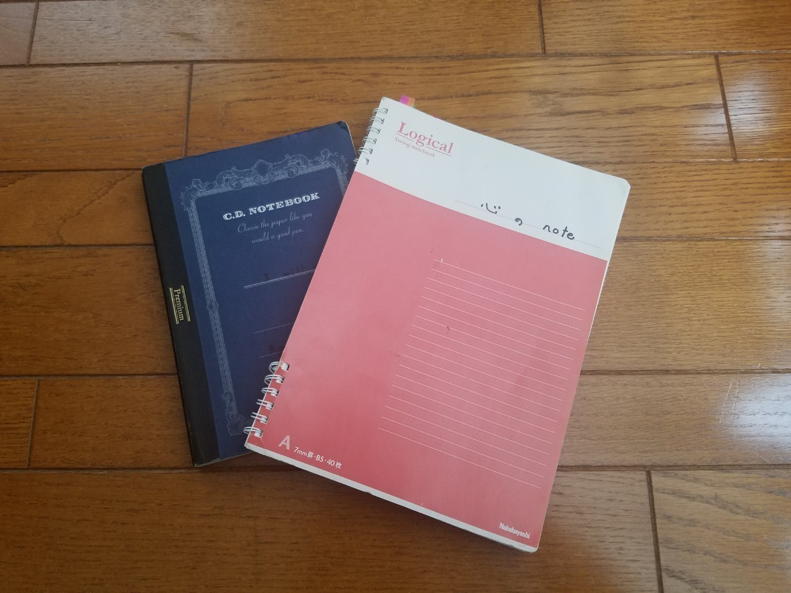

貴方は親と仲が良いですか。
私には2人の父親がいます。
こう言ってしまうと、複雑な家庭環境だと心配されてしまいそうなので、正確に述べます。
私は実の父親のほかに、父親と慕っている人がいます。
その人は個別塾を1人で運営しています。古い木造住宅の教室は8畳ほどの大きさで、そこには長机とパイプ椅子1つ。
実に私は13年間、週に1度の1時間、その空間に通い続けました。
勘の鋭い方ならお気づきかと思いますが、つまり私は20代前半まで通っていたのです。
はっきり言って、20歳を越えてからはほとんど勉強などしていません。笑
ただ話をしに行っていただけです。でも高校・大学受験と就職活動まで面倒を見てもらい、私の今があるのはその"先生"のおかげなんです。
一応実の父親についても触れておくと、とにかく無口です。口下手です。
昔はそのことに対し悩んだこともありました。でも、大人になるにつれ、父親は私を嫌いで口を利いていないわけでなく、そういう人間なんだと受け入れることができました。
そんな父親の代わりに話をしてくれた存在が先生でもありました。
先生は父親とほとんど同じ歳だったこともあり、とても温かく感じたのです。
そして、先生は私に生きがいを与えてくれた人でもありました。
そのきっかけとなったのは、私が中学生の時に遡ります。
私は中学時代に荒んだ生活を送っていました。 学校にはほとんど行かず、家からも出ない生活。そんな時でも、個別塾にだけは行きました。
ほかの大人は頭ごなしに"学校に行け"と言う。
でも、先生はそうは言わない。
その代わり、"逃げずに自分と向き合え"と言った。
先生はある時、1冊の大学ノートを手渡します。
「これを使って向き合うんだ」と。
この日から私の日記をつける日々が始まりました。
繰り返されるつまらない毎日と周りを困らせる行動が書かれた日記。
乱雑な字で、今にも目を逸らしたくなるような凶暴な思い。

今日も学校に行けなかった。
私の日記はこの言葉から始まった。
普通ではない内容でした。
自分でさえ恐ろしくなる中身でも、先生は何1つ見逃すことなく目を通し、目の前にいる私の心に問いかけます。
「なんでそう思った？」
「何がお前をそうさせた？」
振り返れば、先生は周りの人間でなく私自身が心の整理をするように促していたのかもしれません。
先生の問いかけや言葉1つ1つが、水面の波紋のように響き渡ります。
"周りの人たちは自分のために存在しているわけじゃない"
"高い壁を自ら作り上げてしまったなら、それを自ら越えていくしかない"
これが自分と向き合い、対話し、決断した答えでした。
そこから私は変わりました。
中学3年の4月から学校に行き始め、周りの目などお構いなしに登校し続けました。すると、周りの人に恵まれたこともあり、徐々に友人ができ始めました。
気がつくと、2年間学校に行っていなかった人間が中学3年次だけ皆勤賞という、不思議な出来事が現実に起こっていたのです。
「これも、これも、これも、これも。紛れもなくお前の人生だ」
先生は中学卒業時に4冊目に突入していた日記と、それまで積み重ねてきた3冊分の日記を1つずつ指差して言いました。
こうして私は、何とか中学を卒業できたのです。
高校に進学してからは、さらに楽しい日々が待っておりました。
部活に恋愛、友情など、思えば青春のど真ん中にいました。多くの人と仲良くなり、毎日が楽しくて仕方ありませんでした。
そんな日々も忘れずに日記に書き記していました。
既に文字は小綺麗にノートの枠線に収まり、以前とは比べられないほどの読みやすさを放っていました。
大学の文学部に進学した頃、私の日記は10冊を超えていました。
それでも私は日記を書き続け、相も変わらず先生に見せていました。
先生に読んでもらえること。
その事実こそ、私が日記を書き続けられた理由でした。

現在14冊目を迎えた日記。
どこにでも売っているノートに書くスタイルは昔のまま。
そこから端を発し、もっと違う誰かに、もっと多くの文章を読んでもらいたい。
そんな思いが湧き、私は現実に起こった話を私小説に書き換え、先生に見せ始めました。
"お前の文章はキラキラしすぎだ"
"現実と小説は違う。楽しければいいってもんじゃない"
そう言われ、一蹴されたこともありました。
確かに、既に日記の中でも中学の時のような暗い文章は書いておらず、楽しいことばかりを書き記していました。
あの日の感情を思い出そう。
そう考え、日記を読み返すと、当時の思いや感情がダイレクトに蘇ってきます。
"これはすごい"
"心だけタイムスリップしたような感覚"
"共感、感情の想起"
"それが小説なのかもしれない"
私はそう思って、そう信じて、何作も習作を積み重ねました。
そして、初めて先生に褒められた小説が『コーヒーブレイク』という作品でした。
https://note.com/embed/notes/ne7f522510ce5
ある男が昔の恋人と再会したい一身でタイムマシンを作って昔に戻る話で、コーヒーをキーアイテムとして取り入れています。

原題は『コーヒーの味』。
インターネットに初めて投稿した作品でもあった。
また、実の父親をモデルとして書いた『キャッチボール』も先生のお気に入りでした。
https://note.com/embed/notes/n7ae22698dc67
「雰囲気を作ること。それが大事だ」
小説を読み終えた先生の言葉を聞いた時、私は思い出したんです。
先生自身も、若い頃は映画監督を目指していたことを。
つまり、先生は私の小説の最初の読者であり、元創作者でもあったのです。
それからまもなくの頃。
何作か小説を書き溜めていた私は、小説を投稿できるインターネットサイトの存在を知ります。そこから私の投稿活動は始まりました。
「小説家になろう」「星空文庫」「カクヨム」そして、「note」。
そこで出会う読者の皆様が寄せてくださるご感想やご意見はとてもありがたく、とても不思議な感覚でもありました。
"ここから世界が広がっていく"
"自分の物語が誰かのもとに届く嬉しさ"
小説を書いていて良かったと、心の底から思いました。
あれから3年。
時は早く、時折執筆を中断したこともありましたが、それでも私は小説を書き続けています。
誰かにとっての小説とは何なのか。
それを教えてくれたのも、やはり先生だったのです。

創作の際に使っていたノート。
日記と同様、私の大切な宝物になった。
そんな先生とも一度、大ゲンカをしたことがありました。
それは大学4年の就職活動の時。第1志望先の採用試験がうまくいき、残すところ最終面接のみとなった時。
興奮気味にそのことを話す私の姿を見て、先生はたしなめるように言いました。
「全部まぐれだ。お前の実力じゃない」
私はこの言葉にカチンときてしまいました。
今思えば、先生は冷静さを欠いていた私に慎重になるよう伝えたかったのだと思います。
しかし、当時の私にその思いは届かず、先生に何度もひどい言葉を浴びせてしまいました。
「あんたに何が分かるんだ」
「どれほど努力してここまできたのか知らないだろ」
「一体何を知ってるんだよ」
言い合いは収まる気配を見せず、結局その日はケンカ別れをしました。
翌週。
私もようやく頭が冷え、先生に謝りました。
そして、先生も私に頭を下げました。その姿を見て、私はとてつもなく胸が締めつけられたのです。
先生に、いつだって私を救ってくれた先生に頭を下げさせてしまった。
大きな罪悪感が生まれ、何週間かはぎこちない会話が続いたことを覚えています。
"そろそろ1人で立って行かなきゃいけないのかもしれない"
"卒業する時がきたのかもしれない"
そんなもやもやした気持ちを抱えたまま、私は第1志望先の最終面接に臨みました。
感触はよくありませんでした。そして、やはり結果は不合格。1,200人中50人の倍率は潜り抜けたものの、採用された25人の枠には入れませんでした。
結果を報告したら、先生は表情1つ変えませんでした。
「縁がなかっただけさ」
そんな無気力な返事だけが、頭の中をいつまでもグルグルと駆け回っていました。
それから数か月後。
私は第2志望の企業に採用され、無事に就職活動を終えました。
先生はそれなりに喜んでくれました。
でも、それでもその表情の中には暗さが残っているように感じました。
残された大学生活を満喫し、卒業旅行などで塾に行けない日も出てきていました。
時間はあっという間に過ぎ、気づけば社会人目前の3月を迎えていました。
塾の最後の日。
お互い気恥ずかしい思いを抱えつつも、別れは告げなくてはならない。
「これまでお世話になりました」
「社会人になっても、大半のことは平気だと思ってる」
「この日記に書かれている苦しみやもがきから抜け出せたんだしさ」
そう伝えると、先生の目元には涙が溜まっていました。
この13年間で初めて見た涙でした。
「お前はもう卒業するんだ」
「平気じゃなきゃ困るよ。もうそろそろ1人で何とかしてみな」
そう言って、微笑みました。
先生は社会へ巣立つ私に、惜しげもなく寂しさを伝えてくれたのです。
それは中学の時、学校に行けなかった時の私の日記のようで、心を離しませんでした。
社会人になった今も、未だに月に1度は会社の帰りに顔を見せに塾に寄っています。
らしくもなくスーツなんか着て、だとか、最近あった話を優しいまなざしで聞いてくれる先生は、あの頃と何1つ変わっていません。
そして、今こそ誰も読者はいませんが、私はこれからも日記を書き続けます。
いつまでも、心の機微を知っておきたい。
いつまでも、今日という日を忘れたくない。
2007.2.14.
日記を初めて書いた日。
この日が私の第2の誕生日でもありますから。
生きがいを与えてくれた人。
苦しみに寄り添ってくれた人。
自分と向き合う大切さを教えてくれた人。
それが私の、かけがえのない"もう1人の父親"です。